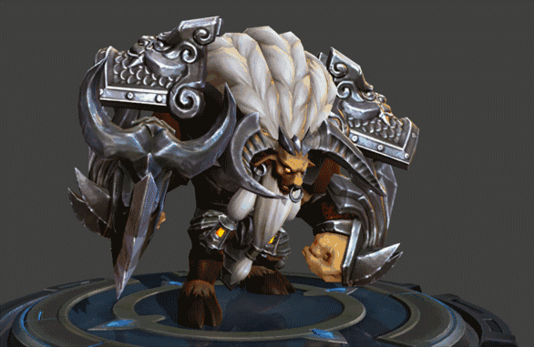
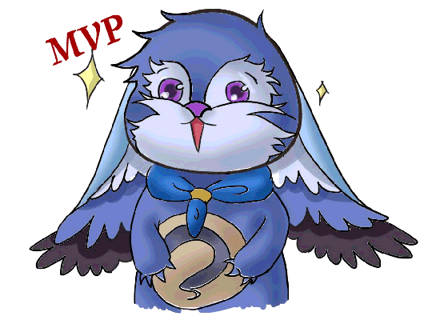

storms make trees take deeper roots.风暴使树木深深扎根。


- 《美的历程》
- 《穆斯林的葬礼》
- 《在细雨中呼喊》
- 天使的翅膀
- Alone
- 琵琶语
- 忘记时间
- qq：1393291542
- 电话：19825000183
王者时刻
|
甄姬 甄姬，是《王者荣耀》中的一位法师英雄角色。 甄姬本是以温柔仁慈闻名大陆的绝代美女，出身极为高贵，被认为流着古代圣者的血脉，从而受到世人的崇敬。她从小被教育要肩负责任，克制自己的欲望，无私的感化世人，净化世间的污秽。 甄姬擅长使用水来控制和伤害敌人，可以说具有强大的团控和控制能力，况且本身的输出也很高，可以用2技能打出多段伤害，不要试图追杀敌方残血，要在后排尽最大可能控制敌人，协助队友完成击杀。 
|
|


热点资讯
|  |  | ||
|
夏洛特，手游《王者荣耀》中的英雄角色。 夏洛特是日落海久负盛名的贵族家族中，最为优秀的继承者。 她的原型是SNK系列游戏《侍魂》中的角色夏洛特女王。 |
关羽的坐骑一开始还出现了很肥大的画面， 但是经过一系列的优化过后，关羽的马也变得非常帅气，而且现在针对关羽的 一技能以及关羽的马眼都进行了再次优化，现在关羽的马眼在草丛中，有敌人 的时候会冒出金光，看起来十分明显，面对关羽武圣的皮肤优化后，不少玩家 都已经心动了 |
在体验服中，马可波罗已经被削弱了， 本身马可波罗就是一个拥有真实伤害的射手，并且马可波罗两段位移都非常灵活， 再加上他一技能超远的攻击距离，让马可波罗在刺客面前非常秀，不管是猴子还是李白， 在马可波罗面前都是弟弟，而这次马可波罗的一技能就被削弱了，这对于一个射手来说， 削弱它的射程就相当于给了他致命一击，所以说喜欢马可波罗的玩家就已经哭了！ |
周年庆活动会被延迟四天，原定于28号举行的周年庆活动， 现在改为了11月1号，而在这延迟的四天里，天美又会给我们怎样的惊喜呢？说实话， 还真的有一点期待呢，也许会对周年庆限定皮肤进行一系列的优化，当然也有可能是 在准备皮肤返场，不过话说回来，这次最有可能返场的皮肤还是孙悟空的大圣娶亲， 毕竟当前他的热度是最高的 |
About us|News|Services|Support|Contact